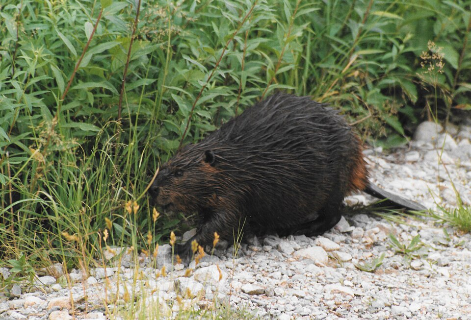
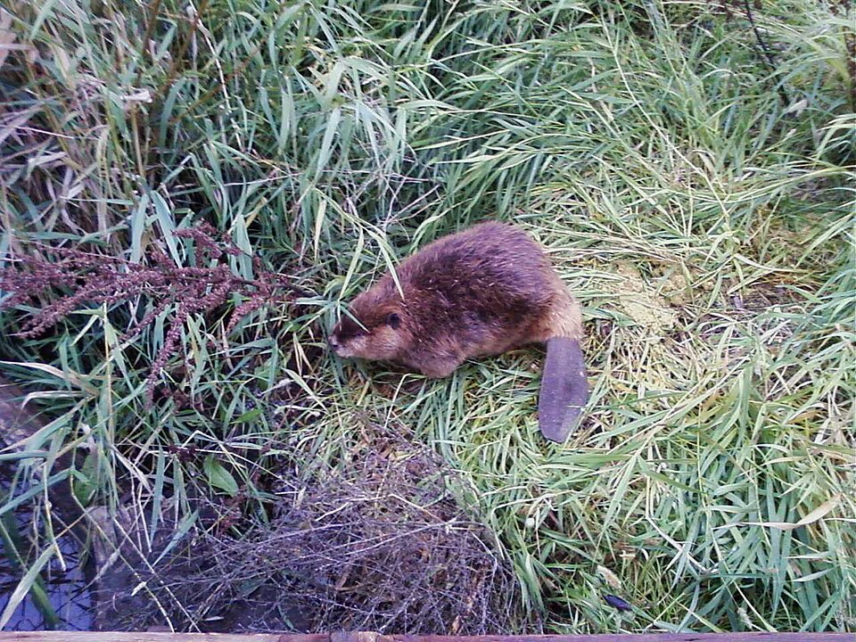

Beaver
Castor canadensis


- Also called
- North American beaver
- Kind
- mammal
- Legal status
- Protected by Vermont law since 1910; the trapping season runs from the fourth Saturday in October to the end of March, with timing set by biologists for each area (Vermont Fish & Wildlife). (checked 2026-11-10)
- Look-alikes
- Muskrat
Names
Beaver, Castor canadensis.
The largest rodent in North America, known by its flat scaly tail and by the dams and lodges it builds. Beavers shape streams and wetlands across Vermont.
Range and habitat
Wooded streams, marshes, small lakes and ponds with reliable water levels and plenty of trees. Beavers were reintroduced from New York and Maine in the 1920s and 1930s; the first 15-day trapping season came in 1950. Aerial surveys on the Green Mountain National Forest in the 1980s and 1990s found a 120 percent increase in ten years.
How to identify
- Head and body 74 to 90 cm long, tail 20 to 35 cm; adults usually weigh 11 to 32 kg, typically about 20 kg (Wikipedia).
- Dark brown fur, long coarse outer hairs over a short fine underfur.
- A large, flat, scaly, paddle-shaped tail and fully webbed hind feet; the front feet are smaller, unwebbed and clawed.
- Ears and nostrils seal underwater; the incisors grow continuously.
Look-alikes
- Muskrat: much smaller, with a long tail flattened from side to side, not top to bottom.
Signs on the land
- Dams of branches, mud, rocks and grass, and lodges of sticks, stones, leaves, grass, sod and mud with an underwater entrance and a ventilation hole at the top.
- Bank dens, burrows and canals; food caches stored underwater near the lodge.
- Trees gnawed through by the incisors; a tail slap on the water signals danger.
Through the year
Most active late in the afternoon and through the night; beavers do not hibernate. Breeding peaks in mid-February; after about 106 days, usually three to five kits are born between mid-May and early June. Kits swim within days, eat solid food at two to three weeks and are weaned at about six weeks. Two-year-olds are driven out in late winter.
Role on the land
The Fish & Wildlife page calls the beaver a valuable renewable natural resource that creates wetland habitat, and says management aims to balance the population with public uses of land and to minimize conflicts between beavers and people. A family of eight needs about a ton of bark to get through the winter.
What helps it thrive
Beavers need abundant food trees and reliable water, with a site for a lodge and a dam. They prefer the inner bark of deciduous trees: poplar, alder, birch, willow, red oak, red maple, cherry and viburnum; in summer, bulrushes, sedges and pond lily roots. Conifers are eaten too, sometimes even when better foods are close by.
Sources
- Vermont Fish & Wildlife, Beaver: https://vtfishandwildlife.com/learn-more/vermont-critters/mammals/beaver
- Wikipedia, North American beaver: https://en.wikipedia.org/wiki/North_American_beaver
Vermont Woodland Owner's Reference, built 2026-11-10. Rules and dates here are summaries, not legal advice; dates shift with elevation and year. Photo and recording credits · The text is by Loop Works, CC BY 4.0 (pictures and recordings keep their own licenses)